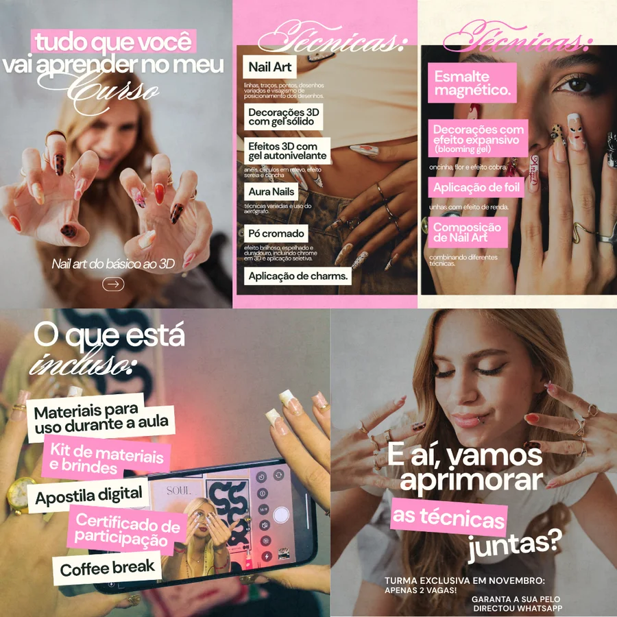
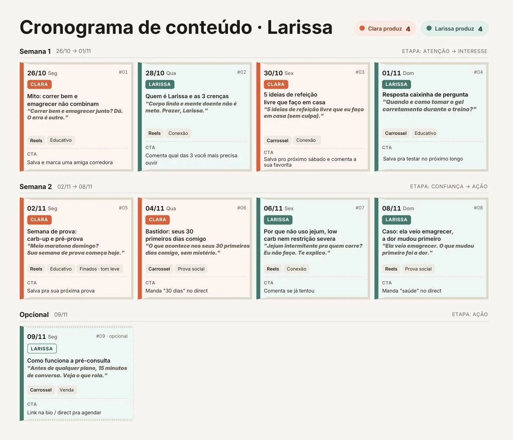
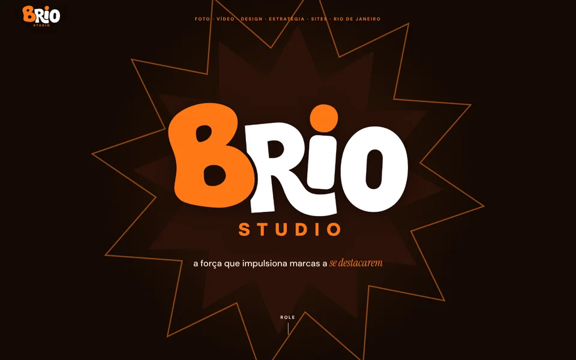
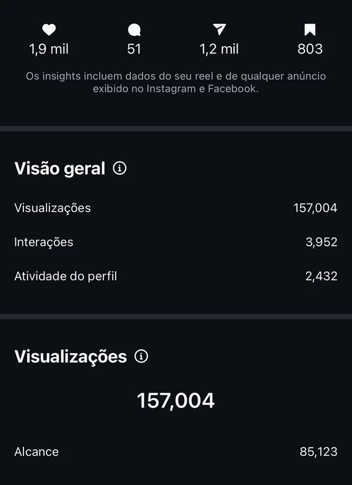
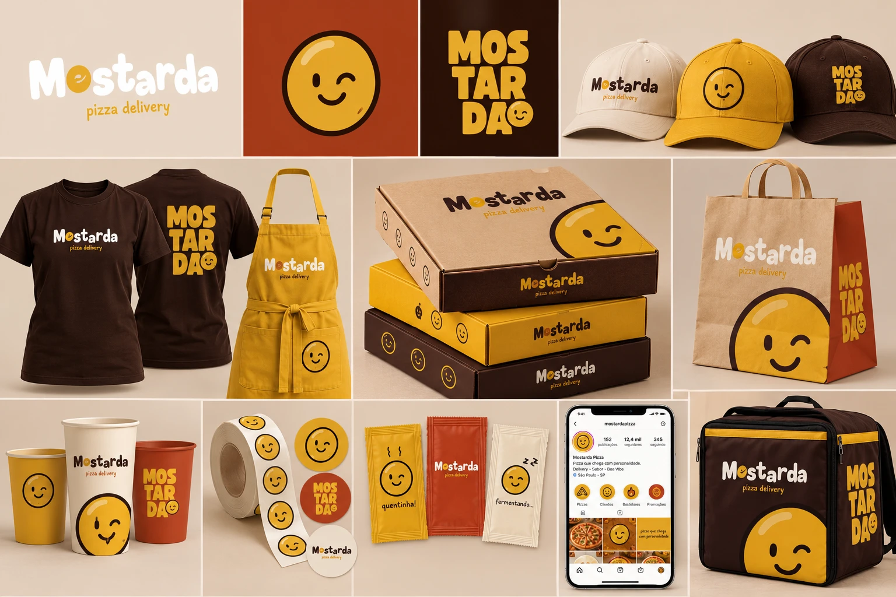
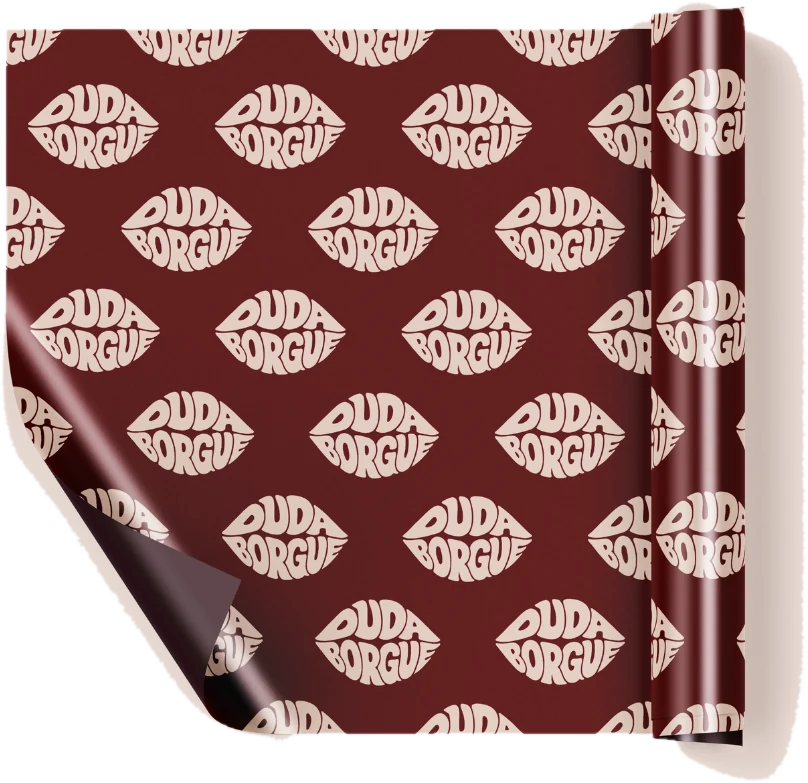
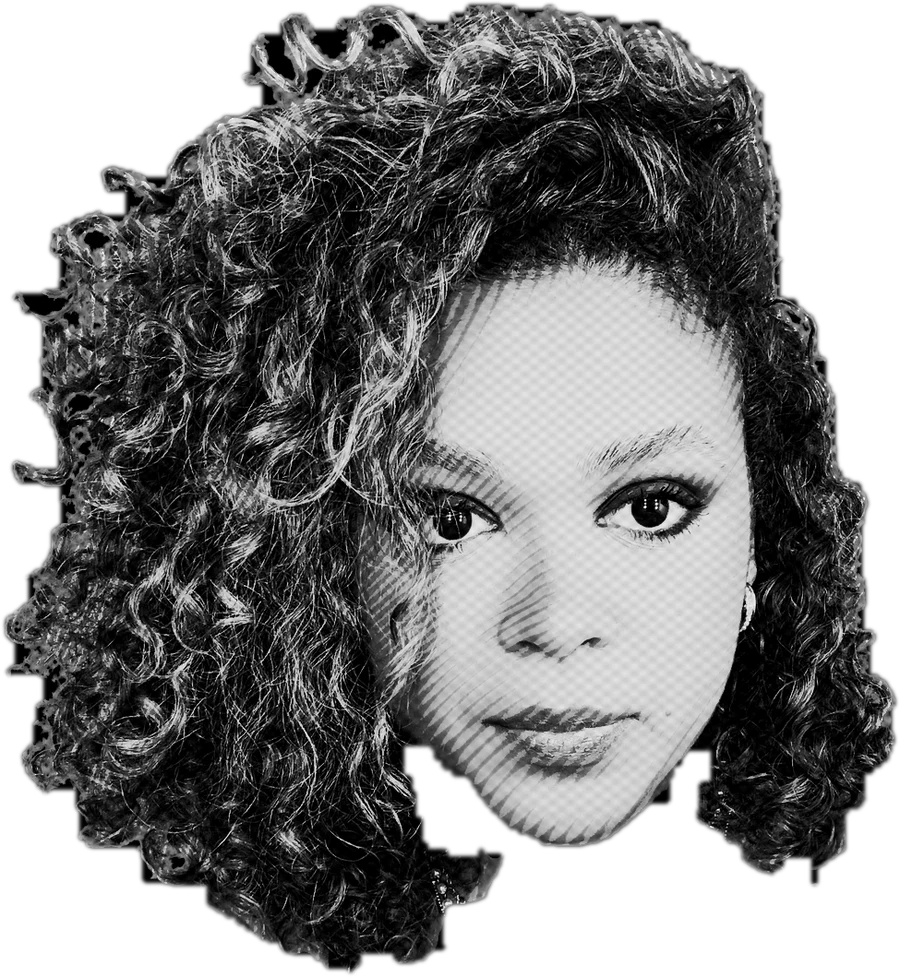

01 / 04
foto e vídeo
da captação à edição. produto, ensaio, cobertura de evento e aftermovie.
RECaftermovie
a força que impulsiona marcas a se destacarem
tem marca que só posta.
a gente faz ela ser lembrada.
da captação à edição. produto, ensaio, cobertura de evento e aftermovie.
identidade visual, posts, backdrop e embalagem. a sua marca com cara de marca.

a ideia, o calendário e o plano pra postar com sentido, não só postar.

um cantinho da sua marca na internet. este aqui foi feito pela brio.

resultados · @globarrestaurante_
0K
visualizações num post
803 salvamentos
0K
visualizações em outro
+4,3 mil salvamentos


restaurante · jardim botânico, rj
“a extensão da sua casa.”
agora também no feed.
cardápio fotografado com luz, ângulo e cor que dão fome.


luz, ângulo e cor pensados prato por prato.
o grão de mostarda virou personagem.
e ele tem humor.

uma marca que fala de boca cheia.

